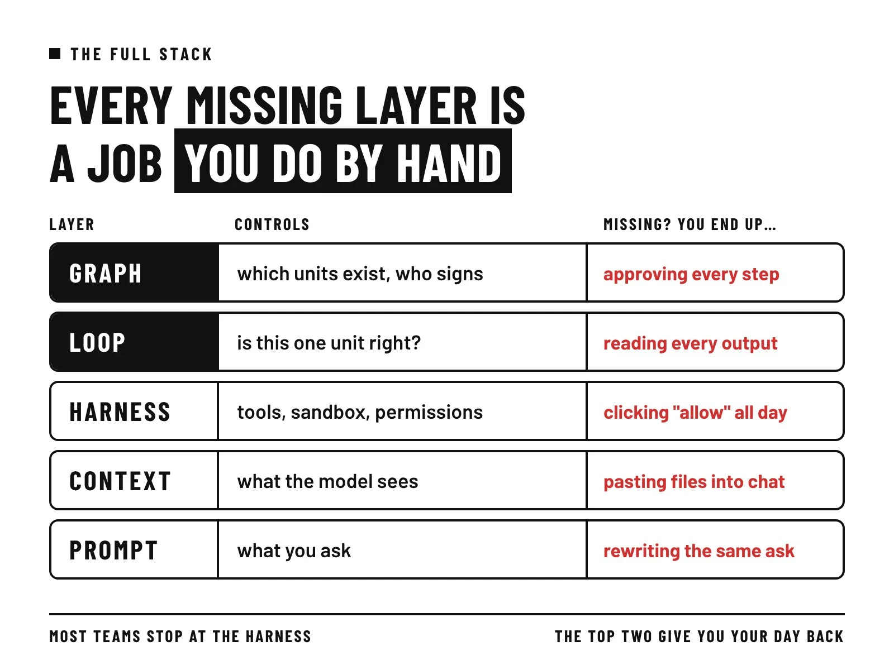
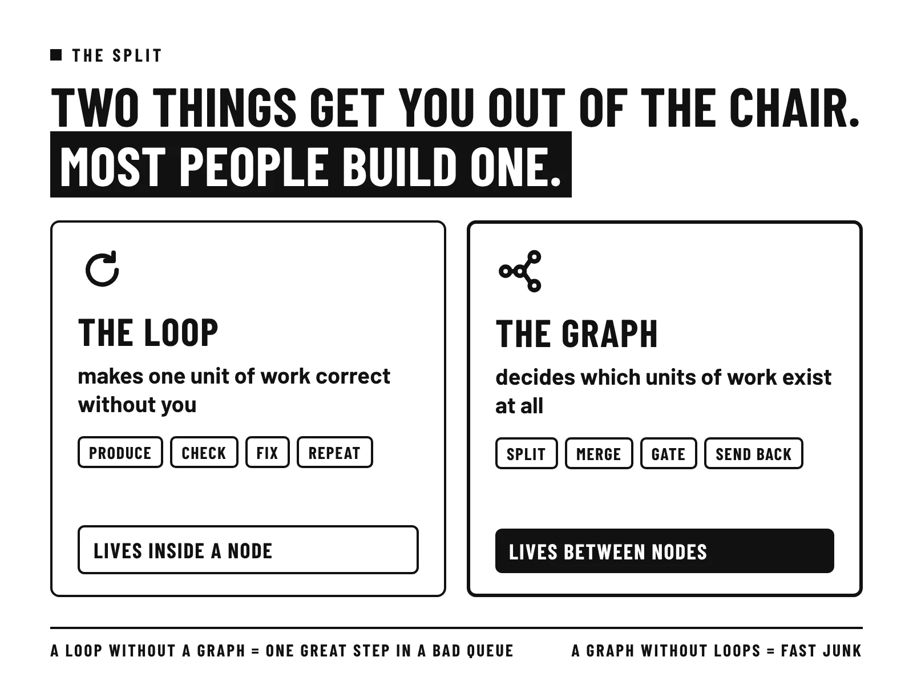
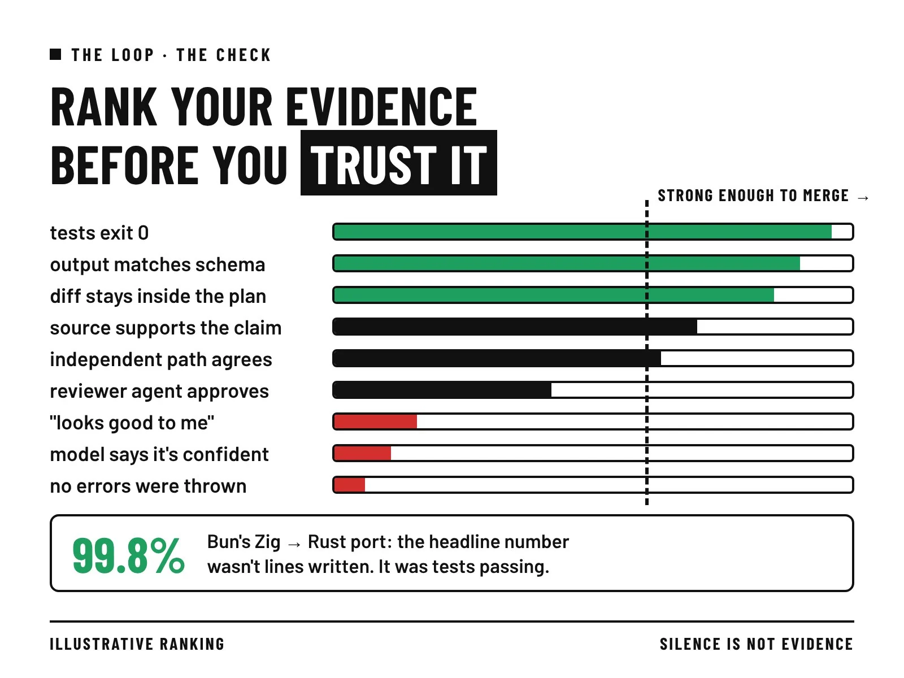
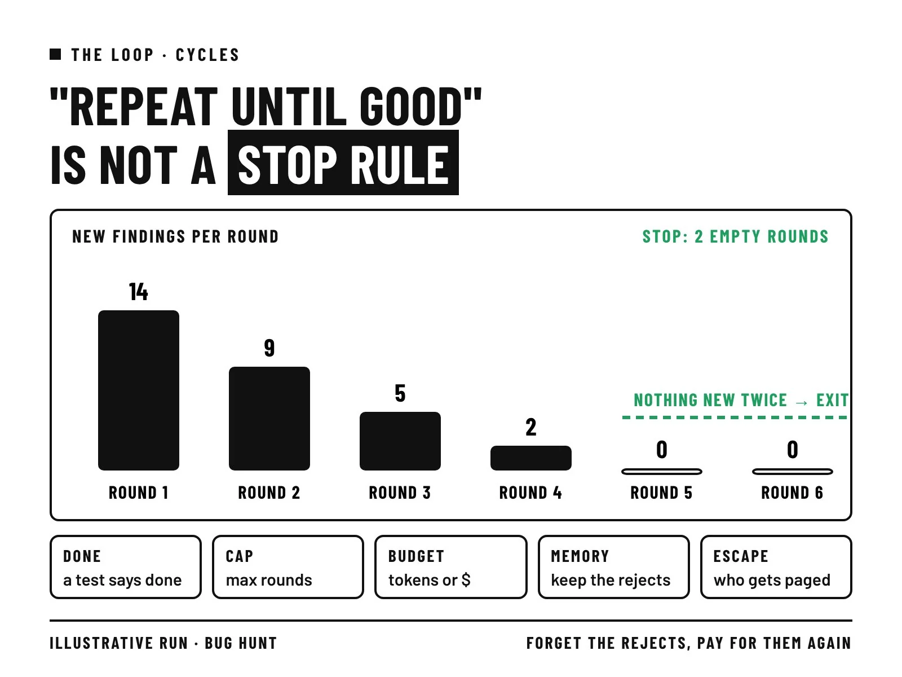
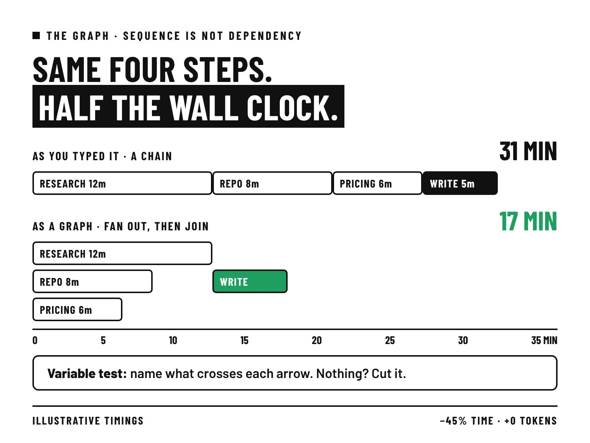
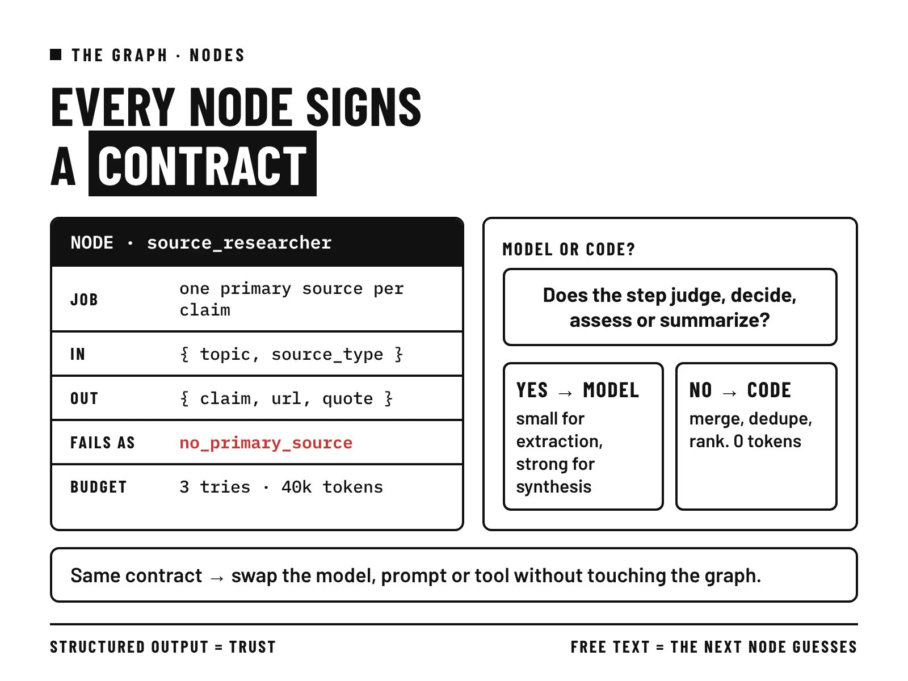
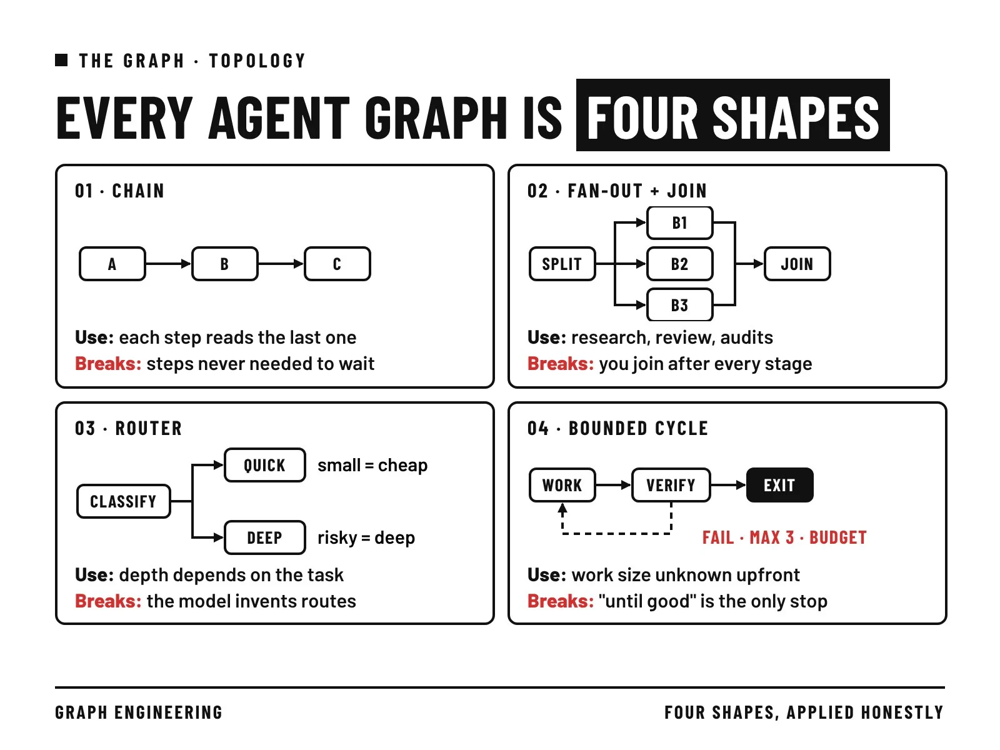
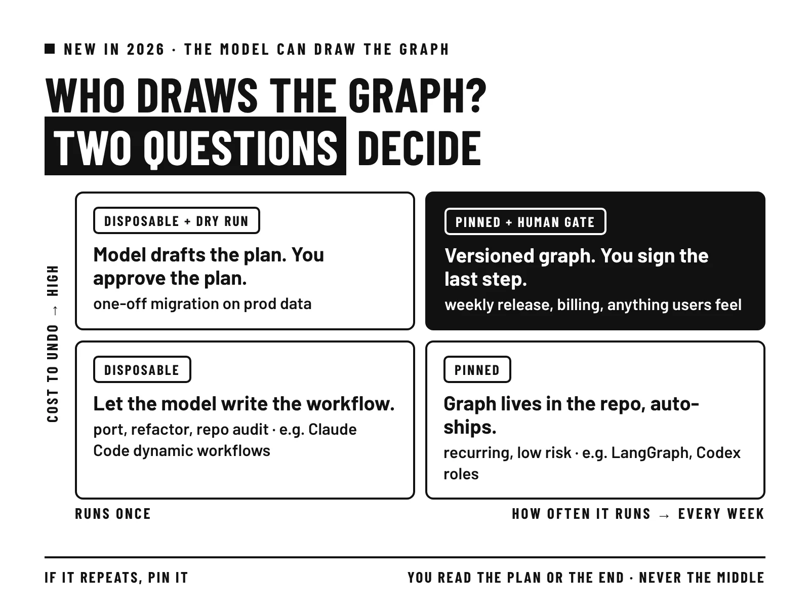
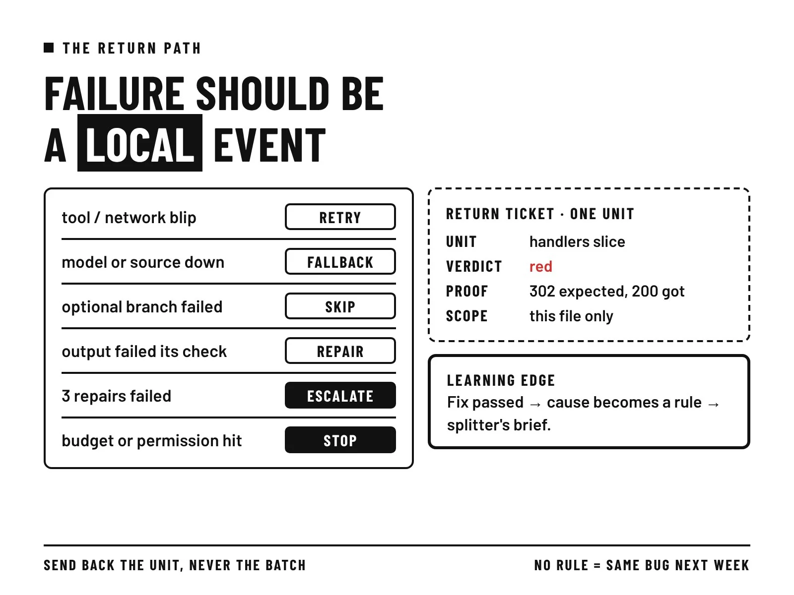
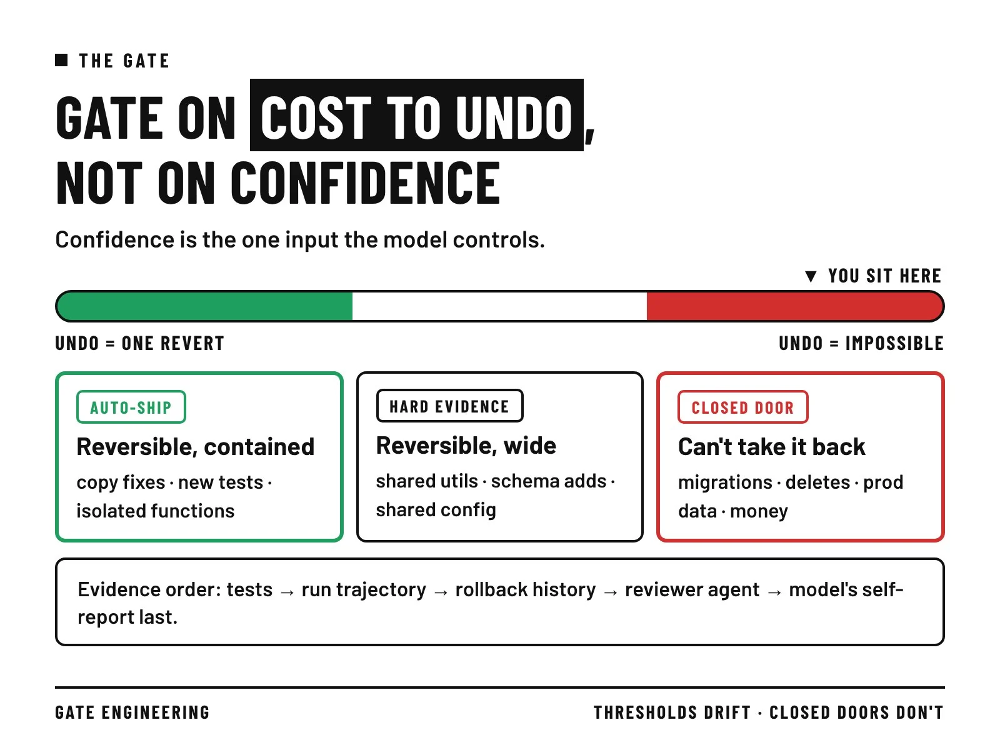

开场 · 只批准最后一档
盯每一步，
还是只签最后一档
loop 像一档进攻后的回看。graph 是整场战术板。闸门是达阵前的挑战旗。

一档进攻后的即时回看与纠错。
谁跑位、谁掩护、何时同时推进。
不可逆的那一档，人举牌签字。
CH 01 · 三层
少一层，
就多一次你下场
点掉一层，看你要亲自做什么。再点一次，把这一层装回去。
loop 让一块工作在没有你的情况下也能做对；graph 决定有哪些块、什么顺序、在哪里由人签字。

多数人只做了第一个，跳过了第二个，所以只能坐着批准每一步。
CH 02 · 回看
回看要能吹停
点一张证据卡，再点档位。也可以拖。程序能判失败的，才算检查。
没有报错，只说明没人报告。

先写检查，再写任务。
CH 03 · 收工
两轮没有新码数
就收工
被否掉的发现也要记进 seen。打开开关，同一条死胡同会把预算磨完。

- 说「完成」的测试
- 轮数上限
- 预算
- 对以前尝试的记忆
- 卡住时会被叫醒的人
CH 04 · 步骤之间
单次进攻再漂亮，
也赢不了整场
问题不在步骤里面，而在步骤之间。这是 graph 的活。
一档一档都是绿灯。
还是又慢又错。这一档也许根本不该存在。
五步里有三步，本可以同时推进。
CH 05 · 剪边
说不出传什么球，
就删这条边
点没有变量的箭头。说得出变量的，留着。31 → 17 是作者举例，不是实测。

31 分钟
CH 06 · 合同
四行写清
一个位置
要判断、决定、评估或总结，就用模型。否则写代码。

任务：每个论点找一个一手来源。输入：主题和来源类型。
输出：论点、链接、原句。失败时报：找不到一手来源。
合同固定了，换模型、换提示词、换工具，下游都不会坏。
CH 07 · 阵型
四种阵型
拼完整场
并行的人要各看各的。共享一个窗口，四份钱只买到一份意见。

CH 08 · 内外
纠错在位置内
调度在位置间
两样都要：人做决定，AI 跑路线。
产出、检查、纠正，直到这一档变绿。
拆分、合并、退回、谁来举牌。
很快产出一大堆没检查过的东西。
一个很棒的步骤，待在设计糟糕的流程里。
CH 09 · 谁画板
看频率，
也看撤销成本
每周从零重画，上一次的规则带不过来。图固定下来，规则才会变多。

每次运行写编排脚本。默认最多 16 个同时跑，每次最多 1,000 个。
配置里定义角色。模型可单独设，沙箱跟着主会话。
图只写一次，能从检查点重放。2025 年 10 月发布。
开源核对：Bun（MIT）、LangGraph（MIT）、Codex（Apache 2.0）。许可以仓库页为准。
CH 10 · 退回
只退那一档
别整队重跑
点一行。整批退回最贵：本来对的片子会被重写，看起来像模型变笨。

| 出了什么事 | 事先定好 |
|---|
CH 11 · 闸门
按撤销难度
开三道闸
置信度是模型给自己打的分。阈值拖得动。关闭的车道没有数字。
达阵前的挑战旗：人举了牌，才落球。

- 先测试
- 再看这次运行的历史
- 再看这个节点被回滚过几次
- 然后才是评审代理
- 模型自己的说法放最后
CH 12 · 带走
你只做一个决定
落在错误无法撤销的那个点：批准合并、选哪些修复上线、签下迁移。
- 一，检查要能失败：程序能判错的才算数。
- 二，数着东西停：两轮没有新发现就停，被拒的也要记住。
- 三，测试每条箭头：说不出传什么变量，就删掉。
- 四，失败只退那一个单元，再把原因写成规则。
- 五，按撤销难度开闸，不可逆的那一步由人签字。
Bun 行数两种口径：约 75 万行 Rust 来自 Anthropic；535,496 行是原 Zig。合并后 19 个回归已修。
31 → 17 分钟是作者举例，不是实测。Codex 沙箱和 LangGraph 年份按官方文档更正。
@HoodieFade_ · Loops & Graphs · X · 2026-11-04。核对日 2026-11-05。交互参考 oioi，比喻仍是球场。
人之所以只批准最后一档，是因为前面每一档都能自己说「不」。